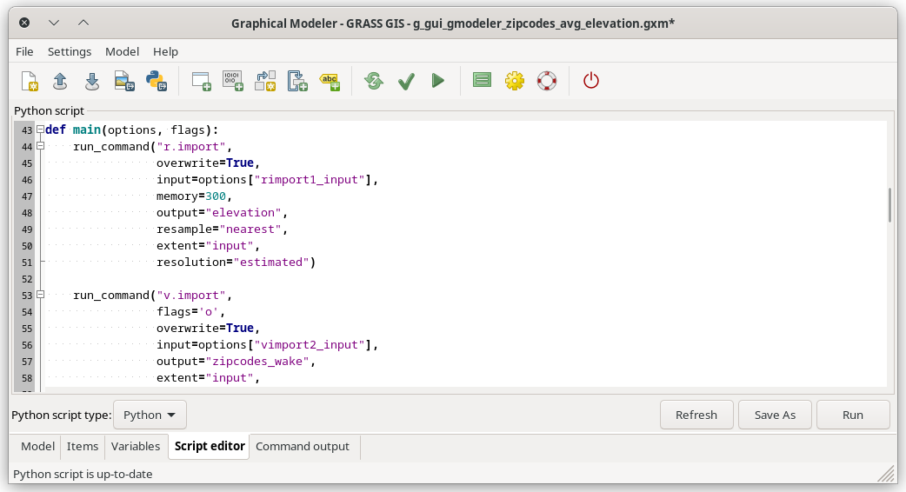

Figure: Components of Graphical Modeler menu toolbar.
The Graphical Modeler is a wxGUI
component which allows the user to create, edit, and manage simple and
complex models using an easy-to-use interface.
When performing analytical operations in GRASS GIS, the
operations are not isolated, but part of a chain of operations. Using the
Graphical Modeler, a chain of processes (i.e. GRASS GIS modules)
can be wrapped into one process (i.e. model). Subsequently it is easier to
execute the model later on even with slightly different inputs or parameters.
Models represent a programming technique used in GRASS GIS to
concatenate single steps together to accomplish a task. It is advantageous
when the user see boxes and ovals that are connected by lines and
represent some tasks rather than seeing lines of coded text. The Graphical
Modeler can be used as a custom tool that automates a process. Created
models can simplify or shorten a task which can be run many times and it can
also be easily shared with others. Important to note is that models cannot
perform specified tasks that one cannot also manually perform with GRASS
GIS. It is recommended to first to develop the process manually, note down
the steps (e.g. by using the Copy button in module dialogs) and later
replicate them in model.
The Graphical Modeler allows you to:
File -> Graphical modeler or from the main
toolbar The main Graphical Modeler menu contains options which enable the user to fully control the model. Directly under the main menu one can find toolbar with buttons (see figure below). There are options including (1) Create new model, (2) Load model from file, (3) Save current model to file, (4) Export model to image, (5) Export model to a (Python/PyWPS/actinia) script, (6) Add command (GRASS module) to model, (7) Add data to model, (8) Manually define relation between data and commands, (9) Add loop/series to model, (10) Add comment to model, (11) Redraw model canvas, (12) Validate model, (13) Run model, (14) Manage model variables, (15) Model settings, (16) Show manual, (17) Quit Graphical Modeler.
There is also a lower menu bar in the Graphical modeler dialog where one can manage model items, visualize commands, add or manage model variables, define default values and descriptions. The Script editor dialog window allows seeing and exporting workflows as basic Python scripts, as PyWPS scripts, or as actinia processes. The rightmost tab of the bottom menu is automatically triggered when the model is activated and shows all the steps of running GRASS modeler modules; in the case some errors occur in the calculation process, they are are written at that place.


Another example:

Example as part of landslide prediction process:

zipcodes_wake vector data and the
elev_state_500m raster data from the North Carolina
sample dataset (original raster and
vector
data) are used to calculate average elevation for every
zone. The important part of the process is the Graphical Modeler, namely its
possibilities of process automation.
# input data import r.import input=elev_state_500m.tif output=elevation v.import input=zipcodes_wake.shp output=zipcodes_wake # computation region settings g.region vector=zipcodes_wake # raster statistics (average values), upload to vector map table calculation v.rast.stats -c map=zipcodes_wake raster=elevation column_prefix=rst method=average # univariate statistics on selected table column for zipcode map calculation v.db.univar map=zipcodes_wake column=rst_average # conversion from vector to raster layer (due to result presentation) v.to.rast input=zipcodes_wake output=zipcodes_avg use=attr attribute_column=rst_average # display settings r.colors -e map=zipcodes_avg color=bgyr d.mon start=wx0 bgcolor=white d.barscale style=arrow_ends color=black bgcolor=white fontsize=10 d.rast map=zipcodes_avg bgcolor=white d.vect map=zipcodes_wake type=boundary color=black d.northarrow style=1a at=85.0,15.0 color=black fill_color=black width=0 fontsize=10 d.legend raster=zipcodes_avg lines=50 thin=5 labelnum=5 color=black fontsize=10

zipcodes_wake vector map and elev_state_500m
raster map) are parameterized. Parameterized elements show their diagram border
slightly thicker than those of unparameterized elements.

The final model, the list of all model items, and the Script editor window with Save and Run option are shown in the figures below.



Figure: Items with Script editor window.
For convenience, this model for the Graphical Modeler is also available for download here.
The model is run by clicking the Run button
 . When all inputs are set, the results can
be displayed as shown in the next Figure:
. When all inputs are set, the results can
be displayed as shown in the next Figure:


--overwrite option. It will cause maps with identical
names to be overwritten. Instead of setting it for every
module separately it is handy to change the Model Property settings globally.
This dialog includes also metadata settings, where model name, model description
and author(s) of the model can be specified.

r.import a v.import, see the Figure
Run model dialog above)
there are Variables.

The key point is enclosing the substituting variable into %{...} and setting
the value in the Variables dialog. For example, in the case of a model
variable raster that points to an input file path and which value is
required to be used as one of inputs for a particular model, it should be specified in
the Variables dialog with its respective name (raster), data
type, default value and description. Then it should be set in the module dialog as
input called %{raster}.

*.gxm extension. The advantage is that it can be shared as a
reusable workflow that may be run also by other users with different data.
For example, this model can later be used to calculate the average precipitation
for every administrative region in Slovakia using the precip raster data from
Slovakia precipitation dataset and administration boundaries of Slovakia from
Slovak Geoportal
(only with a few clicks).
Intermediate by single clicking using the right
mouse button, see figure below. All such data should be deleted following
model completion. The boundary of intermediate component is dotted line.

*.py.
The result is shown in the Figure below:


By default GRASS script package API is used
(grass.script.core.run_command()). This can be changed in the
settings. Alternatively also PyGRASS API is supported
(grass.pygrass.modules.Module).
0.0001 to represent real ndvi values. Moreover, GRASS GIS
provides a predefined color table called ndvi to represent ndvi data.
In this case it is not necessary to work with every image separately.
%{map} for a
particular MODIS image in mapset and %{ndvi} for original data name suffix).
After the loop component is added to model, it is necessary to define series of maps
with required settings of map type, mapset, etc.

When the model is supplemented by all of modules, these modules should be ticked in the boxes of loop dialog. The final model and its results are shown below.


The steps to enter in the command console of the Graphical Modeler would be as follows:
# note that the white space usage differs from the standard command line usage
# rename original image with preselected suffix
g.rename raster = %{map},%{map}.%{ndvi}
# convert integer values
r.mapcalc expression = %{map} = %{map}.%{ndvi} * 0.0001
# set color table appropriate for nvdi data
r.colors = map = %{map} color = ndvi
See also selected user models available from GRASS Addons repository.
See also the wiki page (especially various video tutorials).
{kind=link}
{kind=link}
{kind=link}
{kind=link}